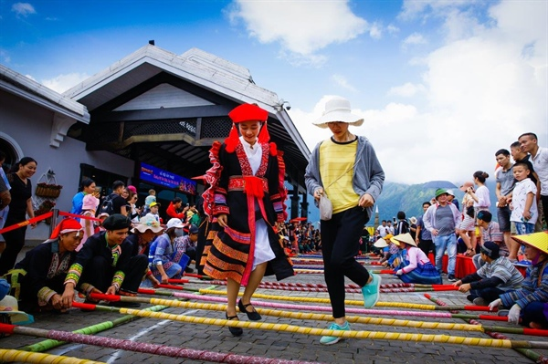
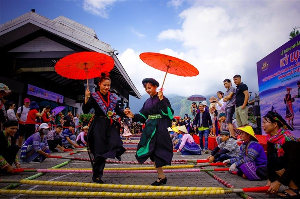

Nhảy sạp là một nét văn hóa đặc trưng và độc đáo của đồng bào dân tộc thiểu số vùng cao Tây Bắc. Múa sạp ngày càng trở nên phổ biến và xuất hiện nhiều trong các buổi giao lưu, gặp mặt và sinh hoạt cộng đồng. Là loại hình văn hóa cộng đồng vui nhộn và mang tính gắn kết cao. Những cô gái vùng cao trong bộ trang phục sặc sỡ cùng sự khéo léo hòa cùng sự nhộn nhịp của tiếng nhạc và tiếng tre, nứa gõ vào nhau tạo nên một bức tranh Tây Bắc đầy sống động. Bài viết dưới đây của chúng tôi sẽ cùng bạn khám phá điệu nhảy sạp của đồng bào vùng cao để có thể hiểu rõ hơn về những nét đặc trưng trong văn hóa Tây Bắc.
Múa xòe, múa sạp đều là những điệu múa dân gian độc đáo mang đến cho mọi người âm hưởng hưởng vui nhộn. Nó vừa mang đậm bản sắc văn hóa của dân tộc Tây Bắc mà còn chứa đựng bên trong đó là tình cảm, cốt cách, tâm hồn của con người dân tộc niềm núi. Trong đó múa sạp hay còn được gọi là nhảy sạp được rất nhiều người thích thú .
Ảnh minh hạo nhảy sạp
Không có một nghiên cứu nào xác định cụ thể thời điểm ra đời của múa sạp. Nhưng dựa vào đạo cụ, cách thức biểu diễn, ý nghĩa của múa sạp. Người ta cho rằng múa sạp là hình thức dân vũ lâu đời của miền Tây Bắc. Có dân tộc tổ chức múa sạp vào ngày hội mùa, vào dịp Tết Nguyên đán. Cũng có dân tộc lại tổ chức múa sạp vào những đêm trăng sáng; như người Khơ Mú ở Điện Biên. Như vậy, trong năm có từ 9 đến 10 đêm múa sạp dưới ánh trăng. Chỉ trừ hai ba tháng giá lạnh, sương sa mù mịt làm che khuất vầng trăng thì người ta mới thôi nhảy múa.
Trước kia nhiều nghiên cứu văn hóa ở sapa cho rằng nhảy sạp có nguồn gốc từ dân tộc Mường. Tuy nhiên, ngày này lại có nhiều nghiên cứu đã chứng minh. Và cho rằng không chỉ riêng dân tộc Mường mà múa sạp đã xuất hiện từ khá lâu ở nhiều dân tộc khác như Thái, Khơ Mú…..
Để có thể chuẩn bị cho các bước nhảy sạp hay nhất đẹp nhất trước tiên cần chuẩn bị các dụng cụ, đạo cụ cần thiết. Trong đó cần phải chuẩn bị sạp cái (2 cây tre to, dài và thẳng); và nhiều sạp con bằng nứa hoặc tre đều được có chiều dài từ 3 tới 4 m, kích thước đường kính từ 3 tới 4cm. Để bắt đầu với các điệu nhảy sạp người ta sẽ đặt hai sạp cách nhau với một khoảng cách nhất định. Sau đó gác hai đầu với những cây sạp con đặt song song với nhau. Cứ như vậy xếp thành một hàng dài (khoảng cách giữa các cây sạp con khoảng bằng 1 gang tay vừa đủ chân nhảy được dễ dàng hơn).
Ảnh minh hạo nhảy sạp
Trong đó đội múa sạp sẽ chia ra làm 2 tốp. 1 tốp sẽ đảm nhận nhiệm vụ đập sạp và một tốp là nhảy sạp. Với tốp nhảy sạp đòi hỏi cách nhảy sạp vừa đúng nhịp điệu tiết tấu. Vừa phải có những động tác khéo léo của tay chân. Nếu không sẽ dẫm lên sạp và làm hỏng cả bài múa. Còn đối với người đập sạp phải đưa rất đều tay, đúng nhịp với tốc độ vừa phải. Thông thường lúc đầu tốc độ đập sạp sẽ chậm để người nhảy dễ dàng nhập cuộc hơn. Nhưng càng về sau sẽ dồn dập nhanh hơn tăng độ khó.
Bà con còn tổ chức nhảy sạp vào dịp lễ hội cầu mưa, lễ hội cầu mùa. Điều đó cho thấy múa sạp vừa là hình thức diễn xướng dân gian mang tính giải trí; gắn kết cộng đồng, đồng thời cũng là vũ điệu mang tính tế lễ; gắn bó chặt chẽ với cuộc sống của cư dân nông nghiệp.
Ảnh minh hạo nhảy sạp
Nhạc nhảy sạp rộn ràng trong tiếng nứa, tiếng thanh tre gõ dồn dập hòa chung với tiếng khèn, tiếng trống và tiếng cười vui đùa của người xem. Tất cả như bức tranh sống động báo hiệu một mùa xuân mới về. Cầu mong một năm mới hạnh phúc và no đủ hơn.